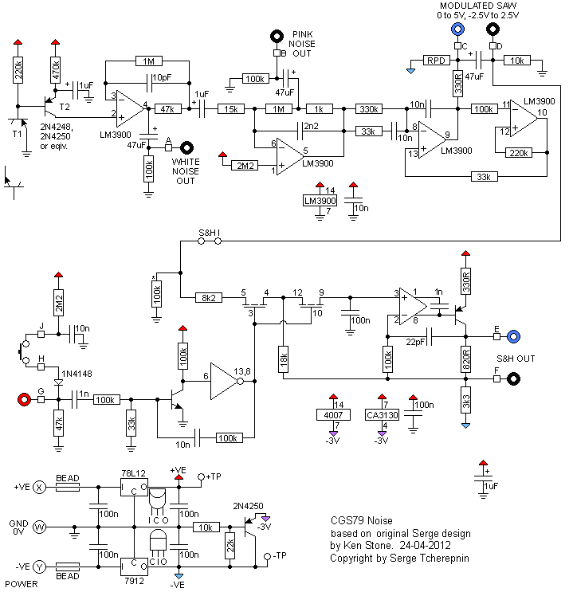

|
The Serge noise module can be built in several ways. In it's simplest form, it contains three basic outputs, White noise, Pink noise, and a random voltage suitable for use with Sample and Hold modules. An optional Sample and Hold circuit is included on the PCB. Alternatively, the basic version may be coupled with the CGS92 Serge Smooth and Stepped Generator to make the Random Voltage Generator module. It will work on either +/- 12 volts, or +/-15 volts by installing on-board regulators. A little on how it works:  The schematic for the noise source. The upper part of the diagram shows the noise source, while the lower part shows the optional Sample and Hold. T1 at the upper left is a transistor selected for its noise characteristics. Below it is an NPN transistor shown in the orientation in which it could be used to substitute for the PNP. As only the base-emitter is used, either type of transistor will work in the circuit.
Construction
Note that the orientation for the transistors on the overlay is for vintage 2N4250 and 2N3565. The pinout of modern PNXXXX devices is usually the reverse of what was used with the 2NXXXX devices. In this case, BC557B and BC547 variant can be used as direct replacements for the vintage transistors, or PNXXXX devices can be used, but installed in reverse with respect to the transistor outlines shown on the PCB. Whatever your choice, the tiny transistor schematic symbol within the "D" is correct and can be followed. If you are sourcing your own parts, it is best to install a socket for the 2N4250 transistor marked N (for noise). You will need to try multiple devices to find one that is sufficiently noisy. Boards purchased from me will include a hand-selected PN4250 which can be installed with no further testing, in reverse to the D symbol on the PCB. Before you start assembly, check the board for etching faults. Look for any shorts between tracks, or open circuits due to over etching. Take this opportunity to sand the edges of the board if needed, removing any splinters or rough edges. When you are happy with the printed circuit board, construction can proceed as normal, starting with the resistors first, followed by the IC sockets if used, then moving onto the taller components. Take particular care with the orientation of the polarized components, such as electrolytics, diodes, transistors and ICs. When inserting the ICs in their sockets, take care not to accidentally bend any of the pins under the chip. Also, make sure the notch on the chip is aligned with the notch marked on the PCB overlay. If you do not require the S&H, everything to the right of "D", with the exception of the 47uF capacitor, can be left off the board. (Viewed with the Power connector to the left.) The LM or CA3130 is a very sensitive device. Use proper CMOS handling precautions when installing it. If you plan to run the module from +/-12 volts, the two regulators are not needed. In their place, two short links need to be installed. See the photo at the top of the page. The overlay indicates where these links need to go. If you wish to run on +/-15 volts, the regulators are essential. The resistor marked 100k* on the PCB is not needed unless you are experimenting with isolating the S&H from the noise circuit. If a resistor is inserted between the S&HI pads, the resistor in the 100k* forms the lower leg of a voltage divider with it. The pair of resistors can then be used to adjust the range of the voltages being fed into the S&H. Pad identification
Set UpThe behavior of this circuit depends very much on the gain of the transistors used. It is possible if you have too much gain, the noise waveform will clip. A true RMS multimeter between 0V and output A (White Noise) will read between 1.3 volts and 1.69 volts if things are working correctly. Higher than 1.69 volts and clipping is likely. Lower than 1.3 volts, will merely mean you have a quieter/weaker output. The tricky part comes in setting up the S&H. Connect output E or F to a VCO, scaled so you can listen to the output range. Connect an LFO to input G. If you find the VCO frequently playing the same low note, you are sending the CA/LM3130 to it's upper limit. To deal with this, separate the circuits by cutting the short track between the two S&HI pads. The S&HI pads have an X between them on the overlay side to indicate where the cut should be made on the rear of the PCB. Connect the C output to the S&HI pad nearest pin 3 of the CD4007. You can then adjust the center voltage of the incoming waveform by installing the resistor "RPD". In my case, RPD was 1k5, but this will depend on the characteristics of the other parts you have used. Notes:
Parts list This is a guide only. Parts needed will vary with individual constructor's needs. If anyone is interested in buying these boards, please check the PCBs for Sale page to see if I have any in stock. Can't find the parts? See the parts FAQ to see if I've already answered the question. Also see the CGS Synth discussion group.
Article, art & design copyright 2011 by Ken Stone
| ||||||||||||||||||||||||||||||||||||||||||||||||||||||||||||||||||||||||||||||||||||||||||||||||||||||||||||||||||||||